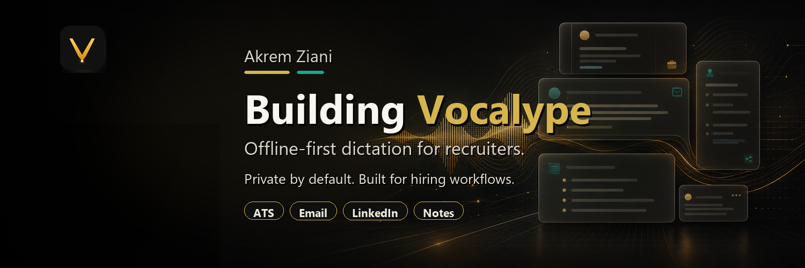

Writing
Founder notes.
Essays about Onzaris, sports operations, sales systems, product building, and the practical work of building from zero.
The goal is not empty content. The goal is a public trail that helps people understand what Akrem is building, why it matters, and what he is learning.
Field notes · 2026

What gets written downBuild. Sell. Learn.
Notes from the work behind the product.
Start here
Pages that teach the story.
Every article should reinforce the same identity: Akrem Ziani, founder of Onzaris, building software for real sports operations.
Founder storyWhy I started Onzaris
The origin of the company and the operational problem it is built to solve.
Product noteWhat Onzaris is built forThe company page connecting Akrem to the sports operations category.
ProfileWho is Akrem Ziani?The direct search-friendly answer for people discovering the name.